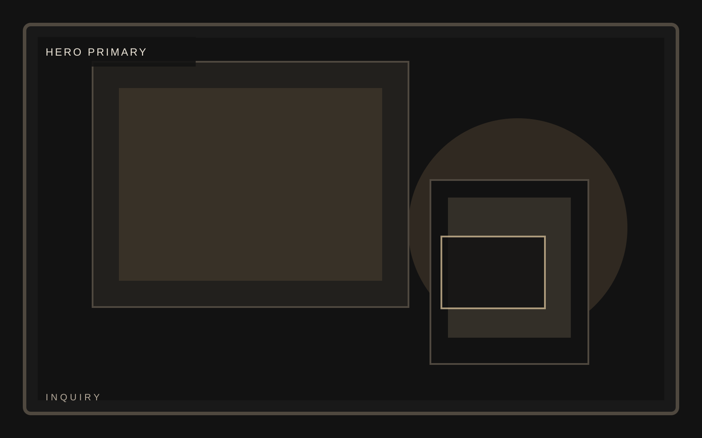
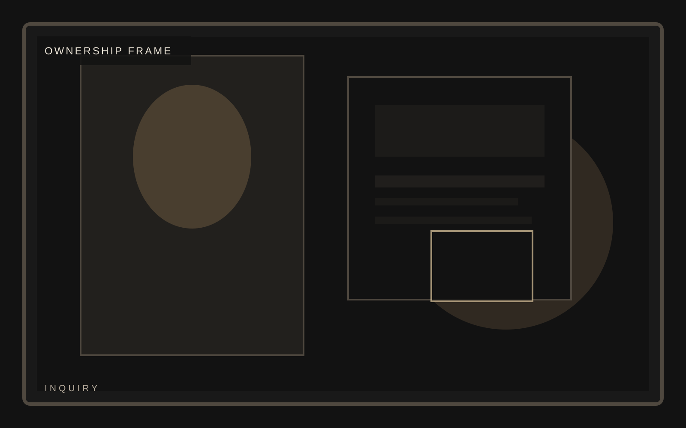

Edition
Low-volume release

Collector product launch
A premium physical product template built for limited releases, collector narratives, and high-intent inquiry rather than generic commerce tropes. Inquiry should feel like admission to a selective release.
Collector product launch
Meridian treats inquiry like an editorial spread, using restraint, contrast, and collector-grade framing to keep pressure on the object. This inquiry page stays consistent with the template system while giving this section its own visual weight.

Collector product launch
Availability should make the inquiry feel consequential. The template works best when access feels selective.